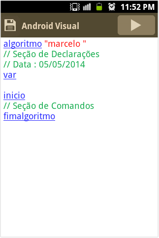

Infraestrutura para Lógica de Programação
Para estudar lógica de programação é necessário ter um software que interprete e execute comandos do pseudocódigo. Um dos diversos softwares existentes para interpretação e execução de comandos do pseudocódigo é o VisualG. Este software é gratuito e é desenvolvido por uma empresa brasileira chamada Apoio Informática.
A seguir estão os procedimentos para montar a infraestrutura para estudar lógica de programação nos sistemas operacionais Linux, Windows e Android.
Sistema Operacional Linux
- Instalar o Wine
- Baixar o VisualG aqui
- Salvar o arquivo visualg2.0.exe num diretório de sua preferência
- Abrir um Terminal
- Entrar no diretório onde o arquivo visualg2.0.exe foi salvo
- Executar o VisualG utilizando o comando wine visualg2.0.exe
A figura abaixo é a tela inicial do VisualG no Linux.

Sistema Operacional Windows
- Baixar o VisualG aqui
- Salvar o arquivo visualg2.0.exe num diretório de sua preferência
- Abrir o Windows Explorer
- Entrar no diretório onde o arquivo visualg2.0.exe foi salvo
- Executar o VisualG clicando duas vezes sobre o arquivo visualg2.0.exe
A figura abaixo é a tela inicial do VisualG no Windows.
Sistema Operacional Android
- Baixar o AndroidVisual na loja de aplicativos da Google
- Executar o AndroidVisual
Obs. O AndroidVisual é a versão do VisualG para Android.
A figura abaixo é a tela inicial do AndroidVisual.
